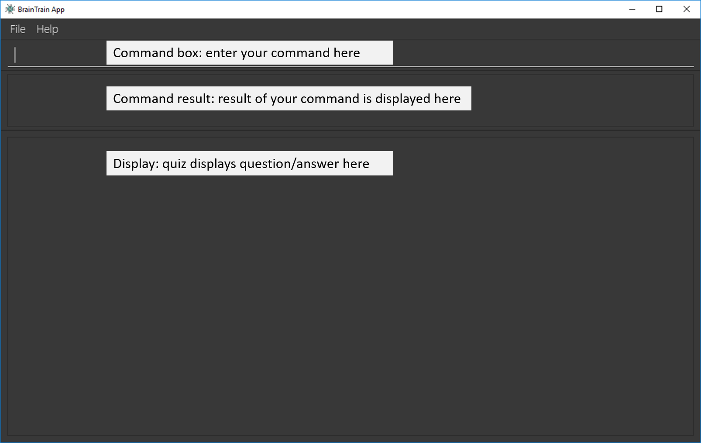

1. Introduction
The purpose of this portfolio is to demonstrate my software engineering competency by showcasing my code and documentation contributions to the BrainTrain project.
1.1. Overview
The BrainTrain project was developed by a team of 5 students over seven weeks, under the National University of Singapore’s CS2103T: Software Engineering module.
CS2103T students were given the option of enhancing an existing addressbook application or morphing it into another product. We chose to morph it into a spaced-repetition flashcard application because we wanted to further challenge ourselves and improve our software engineering skills.
1.2. What is BrainTrain
BrainTrain is a flashcard application which makes memorizing easy and efficient. Research has shown that the Spaced-Repetition System (SRS) is much more effective than traditional memorization techniques. With BrainTrain, you will learn more with less time.
Who is it for:
-
Learners who need to memorise content (e.g. Japanese vocabulary, human anatomy, operating system concepts)
-
Educators who want to create flashcard lessons for their students
Main features of BrainTrain:
-
You can add, edit and delete flashcard lessons in BrainTrain’s management mode.
-
You can also create lessons in your preferred spreadsheet application and import them as
.csvfiles with ease. -
You can attempt flashcard lessons in BrainTrain’s quiz mode and your user-specific data (e.g. spaced-repetition information) will be saved automatically.
2. Summary of contributions
My role was to design, document, and code the Card Management System. My secondary role was to manage the overall project documentation. The following is a list of my key contributions to the project.
2.1. Major enhancement
My largest contribution to the project was the implementation of the Card Management System:
-
What it does: The system allows the user to manage flashcard lessons.
-
Users can view, add and delete lessons using the
listLessons,addLessonanddeleteLessoncommands. -
Users can open a lesson for editing and close it to save changes using the
openLessonandcloseLessoncommands. -
Users can view, add and delete flashcards using the
listCards,addCardanddeleteCardcommands.
-
-
Justification: Users need to be able to create and edit lessons in order to use the BrainTrain application for spaced-repetition flashcard learning.
-
Code contributed: [Functional code]
2.2. Minor enhancement
My second largest contribution to the project was the implementation of the Graphical User Interface representation for the Card Management System:
-
What it does: Displays all lessons as a list and also the opened lesson’s flashcards.
-
Justification: Users are able to view all lessons and the flashcards they contain easily and at a glance.
-
Code contributed: [Functional code]
2.3. Other contributions
In addition to designing and writing code, I also contributed to the project through the following means:
-
Documentation:
-
Project management:
-
Managed product releases
v1.2.1andv1.3 -
Closed milestone
v1.3
-
-
Software architecture:
-
Performed major refactor of
seedu.address.logicpackage structure and design to improve workflow for entire team (Pull request #85)
-
-
Community:
3. Contributions to the User Guide
In addition to updating the User Guide with the newly added Card Management System commands, I also wrote the Introduction and Quick Start sections, and edited the document to ensure overall consistency. I have listed some of my key contributions to it as excerpts below:
4. Introduction
BrainTrain is an open-source spaced repetition flashcard application which makes memorizing easy and efficient. Research has shown that the Spaced-Repetition System (SRS) is much more effective than traditional memorization techniques. With BrainTrain, you will learn more with less time.
BrainTrain is also a portable and easy-to-navigate desktop program. It is an offline application which you can use anywhere, even in places with limited or no Internet availability. It can be navigated and used via easy-to-use commands through the Command Line Interface (CLI). The CLI is supplemented by a minimalistic Graphical User Interface (GUI) which provides helpful but non-distracting visual aid. Together, the CLI and GUI provides an effective and straightforward way for you to use BrainTrain.
Start using BrainTrain today! To get started, read [[Quick Start]] for installation and setup instructions.
== Quick Start
To begin using BrainTrain, follow the following set of instructions:
-
Ensure that Java version
9or later is installed on your Computer. You can download it here. -
Download the latest
braintrain.jarfile here. -
Create a folder to use as the home folder for BrainTrain (e.g.
braintrain/). -
Move the downloaded file to the created folder.
-
Double-click the file to run BrainTrain. The GUI will appear in a few seconds.
Figure 1. BrainTrain’s GUI on first run -
Type the command
helpin the command box and press Enter to find out how to use BrainTrain commands.
To learn more about BrainTrain commands, carry on to [[Features]].
4.1. Listing all lessons: listLessons
Displays a numbered list of all lessons.
Format: listLessons
4.2. Adding a lesson: addLesson
Adds a lesson.
Format: addLesson n/NAME q/QUESTION CORE a/ANSWER CORE [c/CORE]… [o/OPTIONAL]…
Usage rules:
-
You must specify
QUESTION COREandANSWER CORE.QUESTION COREandANSWER COREsets theCOREheaders describing the question and answerCOREvalues of flashcards added to this lesson.-
For example, a lesson for memorising the capitals of countries will have the
QUESTION COREset as "Country" andANSWER_COREset as "Capital".
-
-
You can optionally specify 0 or more additional
COREheaders (e.g. "Language"), which can be set as theQUESTION COREandANSWER COREby using the commandeditLesson. -
You can only add flashcards which have
QUESTION CORE,ANSWER COREandCOREvalues which correspond to the lesson’sCOREheaders. -
You can optionally specify 0 or more
OPTIONALvalues (e.g. "Hint").-
Flash cards added to the lesson need not have corresponding
OPTIONALvalues. -
OPTIONALvalues are displayed during quiz mode when you enter\hint.
-
Examples:
-
addLesson n/Upper limb anatomy q/Statement a/TrueOrFalse -
addLesson n/Capitals of the world q/Country a/Capital c/Language o/Hint
4.3. Deleting a lesson: deleteLesson
Deletes a lesson by referencing its index in the numbered lesson list.
Format: deleteLesson INDEX
Usage rules:
-
To view the list, enter the command
listLessons. -
You must specify the
INDEXof the lesson in the numbered lesson list.
|
You have to open a lesson before you can use the following commands: |
Examples:
-
deleteLesson 2
Deletes the second lesson in the numbered list displayed bylistLessons.==== Opening a lesson:
openLesson
Opens a lesson from the numbered lesson list so you can edit the lesson and its flash cards.
Format: openLesson INDEX
Usage rules:
-
To view the lesson list, enter the command
listLessons. -
You must specify the
INDEXof the lesson in the numbered lesson list.
Examples:
-
openLesson 1
Opens the first lesson in the numbered list.
4.4. Closing a lesson: closeLesson
Closes and saves changes made to the opened lesson.
Format: closeLesson
Usage rule:
To open a lesson, enter the command openLessons.
|
Changes made to the opened lesson through the commands: |
4.5. Listing all flashcards: listCards
Displays a numbered list of all flashcards in the opened lesson.
Format: listCards
Usage rule:
To open a lesson, enter the command openLesson.
4.6. Adding a flashcard: addCard
Adds a flashcard to the opened lesson.
Format: addCard c/CORE c/CORE [c/CORE]… [o/OPTIONAL]…
Usage rules:
-
To open a lesson, enter the command
openLesson. -
You must specify at least 2
COREvalues. This is because a flashcard needs at least 2 values to be testable. -
You can optionally specify 0 or more additional
COREvalues. -
You can optionally specify 0 or more
OPTIONALvalues.
You can only add flashcards to the opened lesson if the flashcards have CORE values which corresponds to the lesson’s CORE headers.
Examples:
-
addCard c/Stapes is the smallest bone in the body c/True -
addCard c/Australia c/Canberra c/English o/Starts with C
4.7. Deleting a flashcard: deleteCard
Deletes a flashcard by referencing its index in the numbered flashcard list.
Format: deleteCard INDEX
Usage rules:
-
To view the list, enter the command
listCards. -
Deletes the flashcard at the specified
INDEXof the numbered flashcard list.
Examples:
-
deleteCard 2
Deletes the second flashcard.
4.8. Listing entered commands : history
Lists all the commands that you have entered in reverse chronological order.
Format: history
|
Pressing the ↑ and ↓ arrows will display the previous and next input respectively in the command box. |
4.10. Quiz mode
When you start a quiz session, you will enter quiz mode in which only the following set of quiz commands are allowed. Management commands are disabled in this mode.
4.10.1. Viewing help: \help
Displays usage information on all quiz mode commands and acceptable inputs for answering cards.
Format: \help
4.10.2. Viewing the quiz session’s status: \status
Displays information on the current session’s status such as lesson progress (i.e. number of flashcards left).
Format: \status
4.10.3. Answering a flashcard : [*]
Any input without the escape character \ is treated as an answer to the current flashcard.
Format: [*]
-
For each flashcard, total attempts and answer streak is tracked.
-
Total attempts is the number of times you have attempted this flashcard, regardless of whether you were correct or wrong.
-
The answer streak is the number of times you have answered the flashcard correctly consecutively.
| The streak will be reduced to 0 after you answer a flashcard wrongly twice in a row. Hence, if you accidentally enter the wrong answer once, your streak for the question will not be affected, unless you answer wrongly again. |
| If you do not know the answer of a flashcard and want to view it, simply press ENTER twice. |
Examples:
-
The question is "Japan" and is asking for the capital of "Japan":
Tokyo
This is the correct answer, both the streak and total attempts increased by 1. -
The question is "Tokyo" and is asking for the country of "Tokyo":
Japaan
Japan
This is the correct answer, the streak increased by 1 while total attempts increased by 2. -
The question is "Tokyo" and is asking for the country of "Tokyo":
Japaan
Jappan
This is the wrong answer, the streak is reduced to 0 while total attempts increased by 2.
4.10.4. Labelling the current flashcard as difficult: \difficult
Labels the current flashcard as difficult.
Format: \difficult
Examples:
-
The question is "Japan" and is asking for the capital of "Japan":
\difficult
This will label flashcard of "Japan" as difficult. -
The question is "Japan" and is asking for the capital of "Japan":
\difficult
\difficult
This will label flashcard of "Japan" as not difficult.
4.10.5. Viewing the current flashcard’s hint(s): \hint
Reveals the hint(s) for the current flashcard (if any).
Format: \hint
4.10.6. Quitting the quiz session: \quit
Quits the current quiz session and switches back to management mode.
Format: \quit
5. Troubleshooting
Q: Why are my card values shown as ??????
A: If your lesson contains non-ASCII characters such as:
-
Characters with accents:
à -
Non-English words :
こんにちはالسلام عليكم你好
This can be fixed by opening the lesson file in your preferred spreadsheet application (e.g. Excel), and then saving it as CSV UTF-8 (Comma delimited) (*.csv).
6. FAQ
Q: How do I transfer my data to another computer?
A: Install the app in the other computer and transfer the lesson .csv files over to the /data directory.
7. Command Summary
7.1. Management mode
-
Viewing help:
help -
Starting quiz session:
start n/NAME [c/COUNT] m/MODE
e.g.start n/country-capitals c/15 m/LEARN -
Listing all lessons:
listLessons -
Adding a lesson:
addLesson n/NAME q/QUESTION CORE a/ANSWER CORE [c/CORE]… [o/OPTIONAL]…
e.g.addLesson n/Capitals of the world q/Country a/Capital c/Language o/Hint -
Deleting a lesson:
deleteLesson INDEX
e.g.deleteLesson 2 -
Reloading all lessons:
reloadLessons -
Opening a lesson:
openLesson INDEX
e.g.openLesson 1 -
Closing a lesson:
closeLesson -
Listing all flashcards:
listCards -
Adding a flashcard:
c/CORE c/CORE [c/CORE]… [o/OPTIONAL]…
e.g.addCard c/Australia c/Canberra c/English o/Starts with C -
Deleting a flashcard:
deleteCard INDEX
e.g.deleteCard 2 -
Listing entered commands:
history -
Quiting the program:
quit
7.2. Quiz mode
-
Viewing help:
\help -
Viewing the quiz session’s status:
\status -
Answering a flashcard:
[*] -
Labelling the current flashcard as difficult:
\difficult -
Viewing the current flashcard’s hint(s):
\hint -
Quitting the quiz session:
\quit
8. Contributions to the Developer Guide
On top of updating the Developer Guide with the Card Management System design and implementation details, I also edited the document to ensure overall consistency. I have listed some of my key contributions to the document as excerpts below: